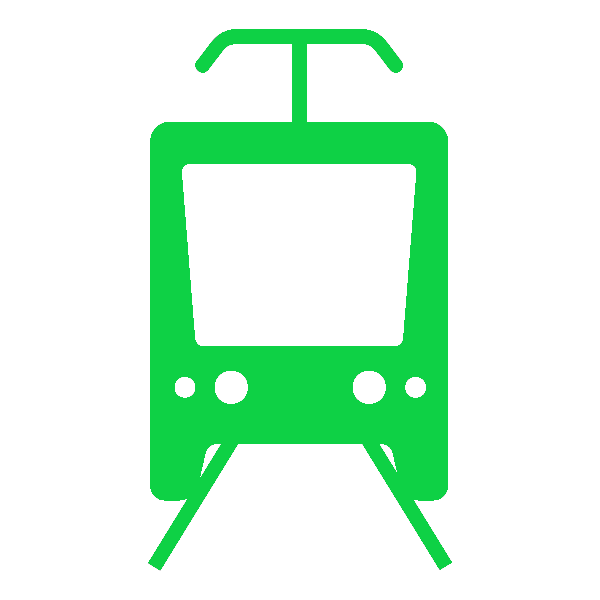

<div class="row content">
  <div class="col-12 col-md-4 sidebar-content">
    <form #createForm="ngForm">
      <label class="col-12 col-form-label" *ngIf="actionType === 'CREATE'"
        >Type:
        <div
          class="btn-group btn-group-toggle"
          ngbRadioGroup
          name="radioType"
          [(ngModel)]="newLine.type"
          (change)="updateMap()"
        >
          <label ngbButtonLabel class="btn-primary">
            <input ngbButton type="radio" value="BUS" /> Bus
          </label>
          <label ngbButtonLabel class="btn-primary">
            <input ngbButton type="radio" value="TRAM" /> Tram
          </label>
          <label ngbButtonLabel class="btn-primary">
            <input ngbButton type="radio" value="METRO" /> Metro
          </label>
        </div>

        Bus is default
      </label>

      <label class="col-12 col-form-label"
        >Zone:
        <div
          class="btn-group btn-group-toggle"
          ngbRadioGroup
          name="radioZone"
          [(ngModel)]="newLine.zone"
        >
          <label ngbButtonLabel class="btn-primary">
            <input ngbButton type="radio" value="FIRST" /> First
          </label>
          <label ngbButtonLabel class="btn-primary">
            <input ngbButton type="radio" value="SECOND" /> Second
          </label>
        </div>

        First is default
      </label>

      <div class="search-item">
        <label for="stmarkNew" class="col-form-label">Mark:&nbsp;</label>
        <input
          #stmarkNew
          type="text"
          id="stmarkNew"
          class="form-control"
          name="stmarkNew"
          placeholder="Enter line mark"
          [(ngModel)]="newLine.mark"
          required
          minlength="1"
        />
      </div>

      <div class="search-item">
        <label for="stnameNew" class="col-form-label">Name:&nbsp;</label>
        <input
          #stnameNew
          type="text"
          id="stnameNew"
          class="form-control"
          name="stnameNew"
          placeholder="Enter line name, minimal of 2 characters"
          [(ngModel)]="newLine.name"
          required
          minlength="2"
        />
      </div>

      <label class="col-12 col-form-label" *ngIf="newLine.stations.length < 2"
        ><span style="color:red"
          ><b>Line must have at least 2 stations!</b></span
        >
        Click on map to add</label
      >
      <label class="col-12 col-form-label" *ngIf="newLine.stations.length > 0"
        >Stations:</label
      >

      <div class="card" *ngFor="let station of newLine.stations; index as i">
        <div class="card-body">
          <label> {{ i + 1 }}. {{ station.stationName }} </label>

          <label *ngIf="i !== 0">
            &nbsp;| Time:
            <input
              type="number"
              class="timeInput"
              required
              name="timeInput{{ station.stationId }}"
              [(ngModel)]="station.arrival"
            />
            minutes
          </label>
          <label *ngIf="i === 0"> &nbsp;| <b>First station</b> </label>

          <button
            class="close"
            title="Remove"
            (click)="newLine.stations.splice(i, 1)"
          >
            x
          </button>
        </div>
      </div>

      <hr />
      <div>
        <div class="btn-group btnFloatRight">
          <button
            type="button"
            class="btn"
            (click)="buttonClick.emit('displayLinesTab')"
          >
            Cancel
          </button>
          <button
            type="submit"
            class="btn btn-outline-primary"
            (click)="createLine(newLine)"
            [disabled]="!createForm.valid"
          >
            Save
          </button>
        </div>
      </div>
    </form>
    <br />
    New line: {{ newLine | json }}
  </div>

  <div class="col-12 col-md-8 map-content">
    <div class="mapButton">
      <button
        type="button"
        class="btn btn-primary"
        (click)="startCreatingRoute()"
        *ngIf="!creatingRoute"
      >
        Create route on the map
      </button>

      <button
        type="button"
        class="btn btn-danger"
        (click)="stopCreatingRoute()"
        *ngIf="creatingRoute"
      >
        Stop creating route
      </button>

      <button
        type="button"
        class="btn btn-primary"
        (click)="clearRoutes()"
        *ngIf="!creatingRoute"
      >
        Clear routes
      </button>
    </div>

    <div class="legend">
      <div class="legend-title"><span>Legend:</span></div>
      <div class="legend-bus">
        <span> Bus</span>
      </div>
      <div class="legend-tram">
        <span> Tram</span>
      </div>
      <div class="legend-metro">
        <span> Metro</span>
      </div>
    </div>

    <div id="map" class="map"></div>
  </div>
</div>
